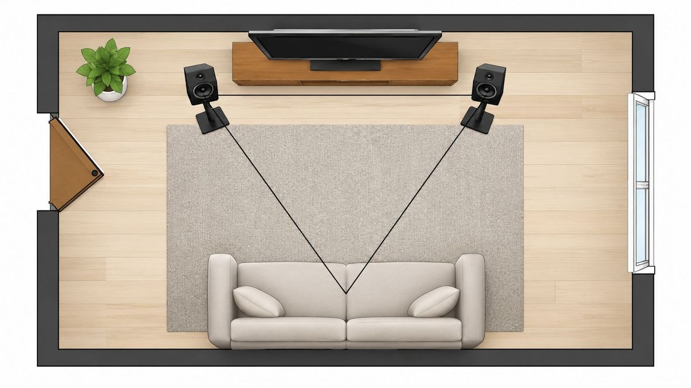

в гостиной 16–24 м² достаточно пары колонок и дивана, поставленных в равносторонний треугольник со стороной 2–3 м. Эхо убирают не панелями за 80 000 руб., а ковром 2×3 м, плотными шторами и мягкой мебелью — это 20–30 % площади поверхностей. Бюджет нормального звука — 15 000–60 000 руб. сверх мебели, а не 300 000.
Треугольник прослушивания
| Параметр | Значение | Что даёт |
|---|---|---|
| Сторона треугольника | 2,0–3,0 м | сцена и разборчивость |
| Угол на колонки | 60° | ровная середина |
| Высота твитера | на уровне ушей сидя, 900–1100 мм | верхние частоты не «уходят» в пол |
| Расстояние до стены за колонками | 300–600 мм | меньше гудения на 80–150 Гц |
| Расстояние до боковой стены | не меньше 500 мм | симметричная сцена |
Колонки ставят симметрично относительно дивана: если левая стоит в 300 мм от стены, а правая в 900 мм, сцена смещается в сторону. Разница больше 200 мм уже слышна на вокале.
Расстановка колонок и дивана

| Вариант | Плюсы | Минусы |
|---|---|---|
| Колонки вдоль длинной стены | простая симметрия | эхо от противоположной стены |
| Колонки вдоль короткой стены | меньше отражений сзади | диван близко к тыловой стене |
| Колонки на стойках | правильная высота, меньше вибраций | +6 000–20 000 руб. |
| Полочные на тумбе | дешевле | резонанс тумбы, неправильная высота |
Диван ставят напротив колонок на расстоянии 2–3 м. Если сзади стена ближе 500 мм, звук отражается и «прилипает» к голове — помогает плотная штора или стеллаж с книгами.
Эхо и время реверберации
| Помещение | RT60 | Как звучит |
|---|---|---|
| Пустая комната с плиткой | 1,2–1,8 с | гулко, речь неразборчива |
| Комната с мебелью | 0,6–0,9 с | приемлемо для кино |
| С ковром, шторами, диваном | 0,4–0,6 с | комфортно для музыки |
| Студия с панелями | 0,2–0,3 с | «сухо», для микширования |
Дома достаточно 0,4–0,6 с. Каждые 10 % площади мягких поверхностей снижают RT60 примерно на 0,1 с. На комнату 20 м² это 2 м² ковра, 4 м² штор и диван.
Мягкие поверхности: что работает
| Элемент | Площадь | Эффект | Цена |
|---|---|---|---|
| Ковёр 2×3 м | 6 м² | убирает отражение от пола | 8 000–30 000 руб. |
| Плотные шторы | 4–6 м² | гасит отражения от окна | 6 000–20 000 руб. |
| Диван с мягкой обивкой | 2–3 м² | поглощение средних частот | уже в смете |
| Акустические панели | 2–4 м² | точечное гашение | 4 000–12 000 руб. |
| Стеллаж с книгами | 2 м² | рассеивание | уже в смете |
Панели нужны только в проблемных точках: за колонками и на противоположной стене. Оклеивать панелями всю комнату в квартире бессмысленно — звук становится «мёртвым».
Отделка стен: что нельзя
| Материал | Влияние | Решение |
|---|---|---|
| Керамогранит, плитка | сильное эхо | не применять на всю стену |
| Глянцевые панели | отражения высоких частот | матовая краска или обои |
| Натяжной потолок | отражает, но меньше штукатурки | мат, без глянца |
| Пустая стена напротив колонок | «хлопок» на низах | стеллаж, штора, панель |
Кино или музыка: разные приоритеты
| Задача | Что важнее | Бюджет |
|---|---|---|
| Фильмы и сериалы | центральный канал, сабвуфер, разборчивость речи | 35 000–90 000 руб. |
| Музыка в фоне | пара колонок, ровная середина | 25 000–60 000 руб. |
| Активное прослушивание | симметрия, стойки, ковёр, акустическая подготовка | 80 000–200 000 руб. |
| Домашний кинотеатр 5.1 | тыловые колонки, кабели, ресивер | 120 000–350 000 руб. |
Для кино центр важнее тыла: 70 % диалогов идёт через центральный канал. Если бюджет ограничен, лучше пара колонок плюс сабвуфер, чем комплект 5.1 из дешёвых спутников. Для музыки сабвуфер не обязателен, если колонки играют от 50–60 Гц.
Проводка под тыловые колонки закладывается до чистовой отделки: кабель 2×1,5 мм² в плинтусе или штробе, с запасом 300–500 мм у каждой точки. После ремонта тянуть провод по стене — это накладки и 3 000–8 000 руб. за маскировку.
Смета 2026
| Позиция | Бюджет | Оптимум |
|---|---|---|
| Колонки + усилитель | 25 000–40 000 руб. | 60 000–120 000 руб. |
| Стойки | 6 000–10 000 руб. | 12 000–20 000 руб. |
| Ковёр 2×3 м | 8 000–15 000 руб. | 18 000–30 000 руб. |
| Шторы | 6 000–12 000 руб. | 14 000–20 000 руб. |
| Акустические панели | — | 4 000–12 000 руб. |
Итого 45 000–80 000 руб. в бюджете и 108 000–202 000 руб. в оптимуме. Разница в звуке между вариантами меньше, чем между «правильно расставлено» и «красиво, но вдоль стены».
Порядок действий
- Определить точку прослушивания и нарисовать треугольник 2–3 м.
- Проверить симметрию: расстояния до боковых стен равны.
- Поставить колонки на стойки, твитеры — на уровне ушей.
- Постелить ковёр между диваном и колонками.
- Повесить плотные шторы, добавить стеллаж напротив колонок.
- Проверить эхо хлопком: если слышен «хвост» дольше 0,6 с — добавить мягкие поверхности.
Чек-лист перед покупкой мебели
- Треугольник 2–3 м помещается без перестановки.
- Колонки симметричны относительно дивана.
- За колонками есть 300–600 мм до стены.
- Ковёр 2×3 м закрывает зону между диваном и колонками.
- Напротив колонок нет пустой глянцевой стены.
Частые вопросы
Нужны ли акустические панели в обычной гостиной?
Обычно нет. Ковра, штор и дивана хватает, чтобы снизить RT60 до 0,4–0,6 с. Панели нужны точечно, если остаётся эхо.
Можно ли ставить колонки на пол?
Полочные — нет: твитер окажется на 400–500 мм, ниже ушей. Напольные ставят на шипы и отодвигают от стены на 300–600 мм.
Помогает ли ковёр убрать эхо?
Да, ковёр 2×3 м снижает отражение от пола на 2–4 дБ в средних частотах. Но высокие частоты он не убирает — нужны шторы и мягкая мебель.
Что делать с гулким низом?
Отодвинуть колонки от стены на 300–600 мм, поставить диван не в центре комнаты и добавить стеллаж в угол. Басовые ловушки в углах — 4 000–12 000 руб.
Хватит ли саундбара вместо колонок?
Для кино — да, для музыки — нет: саундбар не даёт стереосцены. Если важна музыка, нужна пара колонок и усилитель.
Влияет ли натяжной потолок на звук?
Меньше, чем штукатурка: матовое полотно гасит высокие частоты на 1–2 дБ. Глянцевое — отражает сильнее, его лучше не ставить в комнате с акустикой.
Сколько ватт нужно для гостиной 20 м²?
Для колонок чувствительностью 86–88 дБ достаточно 2×30–50 Вт: на 1 м они дают 90 дБ, а комфортная громкость — 75–80 дБ. Мощность выше 100 Вт нужна только для больших помещений.
Куда ставить сабвуфер?
В угол или у стены, но не в центр комнаты. Оптимальное место ищут так: ставят сабвуфер на диван, включают музыку и ходят по комнате — там, где бас ровный, и будет его место.
Источники
Материал подготовлен с опорой на следующие документы и данные:
Дисклеймер
Материалы журнала «Ремонт на примерах» носят информационный характер. Приведённые цены, сроки и нормативы являются ориентировочными: они зависят от региона, состояния объекта, уровня исполнителей и текущей рыночной ситуации, поэтому не могут служить точной сметой или гарантией результата. Перед началом работ проконсультируйтесь со специалистами и проверяйте актуальные требования нормативных документов. Редакция не несёт ответственности за решения, принятые на основании этих материалов.